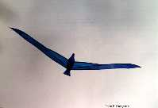
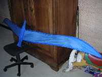
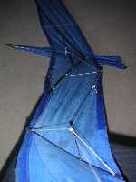

Même en monofil, ceci n'est pas sans poser des problèmes. D'abord, cette forme n'est pas stable naturellement et la queue courte n'a pas d'efficacité. Il m'a fallu beaucoup d'essais pour trouver la solution, basée sur la forme des bouts d'aile. Ensuite la symétrie est très impérative, le moindre défaut de traînée ou d'incidence l'entraîne à tirer voire à tomber du coté où ça penche. De plus, au dessus de Force 3 ou 4, les ailes ont tendance à battre à fréquence assez élevée, même pas naturelle pour un oiseau. Et si le vent se renforce encore, la déformation est telle que l'oiseau ne tient pas en l'air.
Même par vent normal, le réglage est assez délicat et doit être peaufiné à chaque remontage, si bien que je n'ai jamais osé publier le plan. Grâce à une armature en carbone, il est assez résistant et il ne casse jamais en vol (les ailes plient avant et perdent de la force). Les casses ont lieu au contact du sol, lors d'atterrissages sur la pointe d'aile. Mais cela reste très limité.Au sol, il reste d'une taille assez maniable, et plié il n'occupe pas de place.

L'armature est assez simple. Le dièdre est tenu non par un raccord central qui exploserait sauf à le faire en tube de plomberie, mais par une barre de carbone transversale, maintenue au corps au centre par une ficelle de longueur réglable permettant de varier le dièdre. J'ai repris ça sur la plupart de mes réalisations ultérieures, ça évite de faire un raccord coudé au bon angle (lequel ?) et toujours fragile ou lourd.